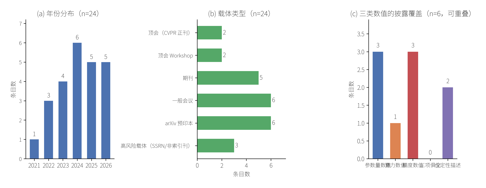

架构演练稿 · spine-001 · 修订于 2026-09-19
视觉 Transformer 以自注意力替代卷积，但二次复杂度与显存访问开销限制了其在移动端与边缘设备上的部署。本文以满足严格计算预算的视觉 Transformer 方法为对象，对 2021–2026年间经检索层获得的 24 条公开记录做文献层梳理，提出以效率来源为轴的四族分类（注意力稀疏化、分组与级联、混合 CNN-Transformer、参数共享与模块重构），并给出可判定样本的证据强度分级。分析显示：在 6 条带摘要记录中，给出参数量数值的 3 条、给出算力数值的 1 条、给出精度数值的 3 条（三类字段可重叠），而同时给出三项者为 0 条；其余 18 条仅具元数据而无摘要可供判定。这说明跨论文性能比较在本证据基础上不成立。本文贡献限于文献组织方式与证据边界的显式化，不含任何新方法或新读数。
关键词：视觉 Transformer；计算效率；轻量化；证据边界；文献组织
自注意力在视觉任务上的优势已被广泛接受，但其代价同样明确：注意力计算随 token 数呈二次增长，且内存访问模式不友好。围绕"如何把成本压下来"，近五年出现了大量改进工作（R01–R24）。
现有综述多按任务分类（分类、检测、分割、复原、视频），这种组织方式便于按应用检索，却掩盖了一个更实质的差异：不同方法降低成本的来源并不相同。有的是把注意力范围限制住（R02、R07），有的是改变通道组织以优化内存访问（R01），有的是让卷积承担局部建模、注意力专注全局（R10、R13、R14），还有的是靠参数共享或模块重构直接压缩模型（R03、R16、R17）。把"分类网络""检测网络"和"轻量网络"并列，读者难以判断某项改进到底缓解了哪一类瓶颈。
本文因此改以效率来源为分类轴，并在同一批文献上额外记录指标披露完备度。后者不是附带统计，而是理解该领域进展的前提：当多数工作不同时报告参数量、算力与精度时，任何"谁更高效"的横向判断都缺乏共同基准。
检索：经学术检索层（CrossRef / arXiv）以"高效视觉 Transformer / 轻量化注意力"为主题检索，返回 29 条记录，纳入 24 条。
纳入口径：记录含可核验 DOI 或 arXiv ID，且主题落在视觉 Transformer 的计算效率改进上。剔除仅涉及 Transformer 一般应用而与效率无关者。范围边界：本批记录中含 3D 点云（R02）、视频识别（R19、R20）与骨架动作识别（R21）各一支，本文将其一并纳入"视觉"范畴，并在第 3 节对其是否适用于静态图像分类单独标注，不作默认推广。载体分级标准：同行评审状态不可确认者（预印本平台，或未被主流索引收录且作者与出版信息单薄的期刊）记为高风险载体；该标签为判断，不是对论文质量的裁决。本批按此标准命中 R22、R23（SSRN 预印本）与 R24（未被主流索引收录的期刊）。
研究模式：本任务在 materials_only 模式下完成，即仅使用已发表记录的表层信息，不进行任何实验、训练、评测或复现。这一限制直接决定了本文的证据上界：对未提供摘要的18 条记录，其具体读数不可知。
明确的证据边界（本节的自我约束）：
1. 本文未获取任何全文 PDF，未经逐段核对；
2. 因此第 3 节的"四族分类"属基于标题与摘要的初步归类，是推断而非论文原文主张；
3. 本文不进行任何跨论文数值比较，理由见第 4 节。
按效率来源划分，纳入文献可分为四族：
F1 注意力稀疏化与结构化。 通过限制每个查询可见的区域或引入可微锚点来削减注意力计算量。代表：PatchFormer 以 patch attention 替代全局注意力（R02）；AnchorFormer 引入可微锚点注意力（R07）。
F2 分组与级联注意力。 不减少注意力覆盖范围，而是重组通道与计算顺序以改善内存访问效率。代表：EfficientViT 的级联分组注意力（R01）。这类工作提示：瓶颈未必是浮点运算量本身，也可能是访存。
F3 混合 CNN-Transformer。 让卷积承担局部特征、注意力承担全局关系，从而在同等预算下取得折中。代表：MobileNetv1-ViT 混合结构（R13）、LightFER（R14）、面向嵌入式证件识别的超轻量卷积注意力网络（R10）、MCANet（R06）。
F4 参数共享与模块重构。 通过递归共享参数（R03）、统一的内在残差元模块（R16）或直接设计亚百万参数档架构（R17）压缩规模。
此外还有两支不属于上述四族：以相对位置编码替代稠密算子（R20），以及冻结大型预训练骨干、仅训练轻量头部（R19）。二者出现于视频识别与视觉-语言场景，是否适用于静态图像分类尚不可从现有记录判断。
骨架动作识别一支（R21）以多分类器共识组织轻量系统，其效率来源与上述四族及两支均不可直接对应，故本演练不为其指定族别，仅保留于纳入范围以备复核。
需要强调：该分类是本文提出的组织方式，而非对原文献主张的复述。
图 1 由纳入的 24 条记录的真实元数据计算得到。

图 1 纳入文献的证据景观（n = 24）。(a) 年份分布；(b) 载体类型构成；(c) 6 条带摘要记录中三类数值的披露覆盖（可重叠）。(a)(b) 两项计数可由 reference_materials/source_index.md逐条回算（其中 sci-q1/q2/q3 合并计为期刊，conf 与 spie 合并计为一般会议）；(c) 的逐条依据见 evidence_bank.md 的 E-A 台账。
三点观察：
其一，方向活跃且产出分散。 年份分布自 2021 年起持续，2024 年达到 6 条。载体构成中，顶会正刊仅 2 条，Workshop 2 条、期刊 5 条、一般会议 6 条、arXiv 预印本 6 条，另有 3 条属高风险载体（SSRN 预印本与非索引刊）。这一构成意味着：若仅保留顶会正刊与期刊（本批共 7 条），可用记录将缩减至不足三分之一。
其二，在有摘要子集内评测口径分裂，横向比较不成立。 在 24 条记录中，可判定披露情况的只有 6 条（其余 18 条检索层未返回摘要）：其中给出参数量数值的 3 条、给出算力数值的 1 条、给出精度数值的 3 条，同时给出三项者为 0 条，另有 2 条未给任何数值。由于训练配方、数据划分与评测协议各不相同，即使都给出 Top-1，也不构成可比较的基准。本文因此不做任何排序或"最优方法"判断。
证据强度分级（本批，仅限 6 条带摘要记录）：
| 级别 | 判据 | 条目 |
|---|---|---|
| 有数值可核 | 至少给出参数量、算力、精度中的一项数值 | R16、R17、R18、R20（4 条） |
| 仅定性描述 | 未给出任何数值 | R19、R21（2 条） |
| 披露状态不可知 | 检索层未返回摘要 | 其余 18 条 |
该分级只表示本批记录的披露程度，不表示方法优劣，也不跨条比较。
其三，摘要体例系统性缺失负结果。 在 6 条可读摘要中，无一条报告失败条件、不适用场景或与基线的负面对照。这提示该体裁可能存在选择性报告倾向，但该迹象需在全文层进一步检验；另需说明，本观察仅覆盖 6 条，不足以推广到全部 24 条。
可成立的四项文献层空白：
- GAP-1 评测口径不统一：在 6 条带摘要记录中，给出参数量/算力/精度数值者各 3/1/3，三项俱全 0 条；其余 18 条披露状态不可知（第 4 节，限 6 条样本）。
- GAP-2 负结果缺失：6 条带摘要记录中未见失败条件报告（限 6 条样本）。
- GAP-3 部署端真实延迟普遍未报告：六条可读摘要均未给出延迟数值（依据：evidence_bank.mdE-A 台账）。本条为推断，因全文未读；若全文实际给出延迟，该推断即被推翻。
- GAP-4 高风险载体占比不低：24 条中 3 条来自 SSRN 预印本平台或未被主流索引收录的期刊，同行评审状态不明。该标签为判断而非事实，判定依据与来源见第 2 节范围说明。
不可成立、本文不主张的一项：
- GAP-5 效率与鲁棒性/分布外泛化的联合评估缺失——该判断需要全文与实验证据，超出本任务的证据范围，故明确不写入结论。
本文的五项局限：
1. 未读全文，方法族归类停留在标题与摘要层；
2. 18 条记录无摘要，其读数与设置不可知；
3. 检索式为单一主题式，未做引文图扩展与滚雪球，存在漏检可能；
4. 样本量小（24 条），第 4 节的每一项观察都应视为初步的；
5. 引用标识的逐条核验未全部完成：6 条仅存 arXiv 标识、1 条 DOI 的标题匹配存疑，均未经逐条解析核验（详见 citation_quality_audit.md）。
在纳入的 24 条公开记录上，视觉 Transformer 的效率化改进可按效率来源归为四族：注意力稀疏化、分组与级联、混合 CNN-Transformer、参数共享与模块重构。在本批可判定记录（6 条带摘要）内，评测口径分裂与负结果缺失限制了跨工作比较的可靠性（两项均为受限样本结论）。本文的贡献限于这一组织方式与边界的显式化，不主张任何方法优劣，也不含新的实验读数。
本表为纳入语料全集（24 条），其中 11 条未在正文单独引注，保留以备复核纳入口径。
[R01] Liu, X.; Peng, H.; Zheng, N.; Yang, Y.; Hu, H. et al. EfficientViT: Memory Efficient Vision Transformer with Cascaded Group Attention. *IEEE/CVF CVPR 2023*. 10.1109/cvpr52729.2023.01386
[R02] Zhang, C.; Wan, H.; Shen, X.; Wu, Z. PatchFormer: An Efficient Point Transformer with Patch Attention. *IEEE/CVF CVPR 2022*. 10.1109/cvpr52688.2022.01150
[R03] Liang, Y.; Anwar, S.; Liu, Y. DRT: A Lightweight Single Image Deraining Recursive Transformer. *IEEE/CVF CVPRW 2022*. 10.1109/cvprw56347.2022.00074
[R04] Choi, H.; Na, C.; Oh, J.; Lee, S.; Kim, J. et al. Reciprocal Attention Mixing Transformer for Lightweight Image Restoration. *IEEE/CVF CVPRW 2024*. 10.1109/cvprw63382.2024.00606
[R05] Li, G.; Zhao, T. Efficient image analysis with triple attention vision transformer. *Pattern Recognition*. 10.1016/j.patcog.2024.110357
[R06] Zhao, Z.; Hao, K.; Liu, X.; Zheng, T.; Xu, J. et al. MCANet: Hierarchical cross-fusion lightweight transformer based on multi-ConvHead attention for object detection. *Image and Vision Computing*. 10.1016/j.imavis.2023.104715
[R07] Shan, J.; Wang, J.; Zhao, L.; Cai, L.; Zhang, H. et al. AnchorFormer: Differentiable anchor attention for efficient vision transformer. *Pattern Recognition Letters*. 10.1016/j.patrec.2025.07.016
[R08] Chang, Z.; Cai, Q. Enhanced Vision Transformer with Dual-Dimensional Self-Attention for Image Recognition. *IEEE PRAI 2023*. 10.1109/prai59366.2023.10332027
[R09] Wu, Z.; Zhou, Y. ELiFormer: A hierarchical Transformer based Model with Efficient Encoder and Lightweight Decoder for Semantic Segmentation. *ACM ACCVIPR 2024*. 10.1145/3663976.3663985
[R10] Shen, Y.; Wei, J.; Niu, X.; Fu, G.; Cao, Z. Efficient ultra-lightweight convolutional attention network for embedded identity document recognition system. *Image and Vision Computing*. 10.1016/j.imavis.2026.105930
[R11] Garg, A.; Nigam, S.; Singh, R. Lightweight Vision Transformer with CBAM and LSTM for Efficient Violence Detection in Image Sequences. *Signal, Image and Video Processing*. 10.1007/s11760-026-05207-7
[R12] Slimani, N.; Jdey, I.; Kherallah, M. Improvement of Satellite Image Classification Using Attention-Based Vision Transformer. *ICAART 2024*. 10.5220/0012298400003636
[R13] Rani, M.; Kumar, M. Lightweight Hybrid MobileNetv1-Vision Transformer Model for Human Activity Recognition. *IEEE ICIIP 2025*. 10.1109/iciip68302.2025.11346208
[R14] Kaur, M.; Kumar, M. LightFER: A Lightweight Hybrid CNN-Transformer based Model for Efficient Facial Emotion Recognition. *IEEE ICIIP 2025*. 10.1109/iciip68302.2025.11346136
[R15] Li, Y.; Cai, B. EL Former-BEV: an efficient lightweight transformer-based BEV perception method. *SPIE CVIPPR 2025*. 10.1117/12.3076237
[R16] Zhang, J.; Hu, T.; He, H.; Xue, Z.; Wang, Y. et al. EMOv2: Pushing 5M Vision Model Frontier. *arXiv preprint 2412.06674*. arXiv:2412.06674
[R17] George, R.; Nishankar, S.; Thuseethan, S.; Ragel, R. G. UtVAA: Ultra-tiny Vision Transformer with Affix Attention for Mobile Image Classification. *arXiv preprint 2606.14735*. arXiv:2606.14735
[R18] Farooq, A.; Awais, M.; Ahmed, S.; Kittler, J. Global Interaction Modelling in Vision Transformer via Super Tokens. *arXiv preprint 2111.13156*. arXiv:2111.13156
[R19] Lin, Z.; Geng, S.; Zhang, R.; Gao, P.; de Melo, G. et al. Frozen CLIP Models are Efficient Video Learners. *arXiv preprint 2208.03550*. arXiv:2208.03550
[R20] Hao, Y.; Zhou, D.; Wang, Z.; Ngo, C.-W.; Wang, M. PosMLP-Video: Spatial and Temporal Relative Position Encoding for Efficient Video Recognition. *arXiv preprint 2407.02934*. arXiv:2407.02934
[R21] Oztimur Karadag, O. SkelVIT: Consensus of Vision Transformers for a Lightweight Skeleton-Based Action Recognition System. *arXiv preprint 2311.08094*. arXiv:2311.08094
[R22] Sanchez-Brito, M. DANTE: A Lightweight Hybrid CNN-Transformer Network for Efficient Image Classification. *SSRN preprint 2026*. 10.2139/ssrn.6811533
[R23] Zhu, Z.; Lu, S. Bc-Vit: Lightweight Transformer with Efficient Attention and Randomized Head for Blood Cells. *SSRN preprint 2025*. 10.2139/ssrn.5123368
[R24] Okafor, C. Lightweight Transformer-Fourier Fusion Framework for Efficient Image Super-Resolution. *International Bulletin of Applied Sciences and Technology 2026*. 10.37547/ibast/volume06issue08-02